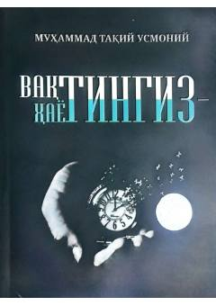

VHVaqtning qadriga yetish va hayotni mazmunli o'tkazish haqida diniy-ma'rifiy qo'llanma.
Ushbu kitob vaqtning qadr-qimmati, uni unumli sarflash va hayotni to'g'ri rejalashtirish masalalariga bag'ishlangan. Muallif Muhammad Taqiy Usmoniy inson umrini mazmunli o'tkazish va uni ezgu amallarga yo'naltirish bo'yicha diniy-ma'rifiy tavsiyalar beradi.